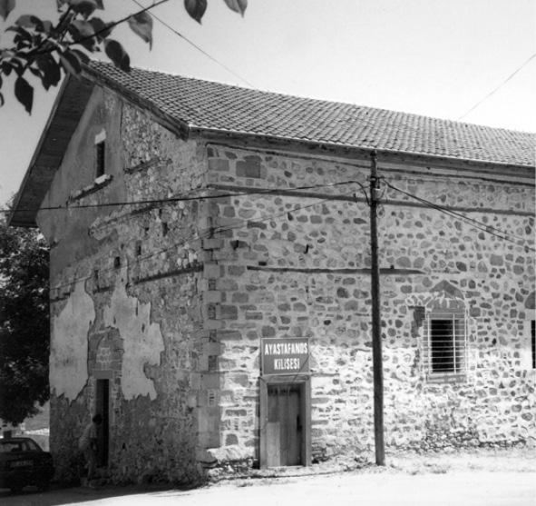
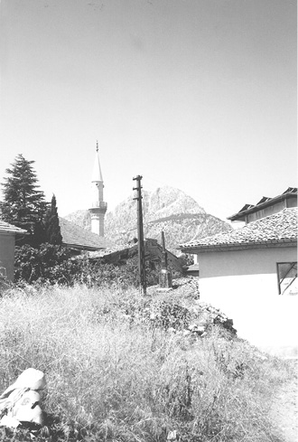

Nurlar’da - Dünyada Nis
(Yeşilada)
Akıp giden bir zaman nehri içinde, neredeyse kırk seneye yak1aştı. Nurlar’ın ilk dershanesi olan Barla’da üniversiteli arkadaşlarla, o güzelim bağ ve dağlarda Nur Risaleleri’ni yirmi günde bitirme aşk u şevki içinde Onuncu Söz olan Haşir Risalesi’nin başlarındaki “Beşinci Suret” kısmını okurken bir ada bahsi çok dikkatimi çekerdi. Çünkü okuduğum Eğirdir sahillerinin az ötesinde Can ve Nis adaları görünüyordu.
1927 senesinin bahar günlerinde Onuncu Söz-Haşir Risalesi’nin yazıldığı Eğirdir kıyılarında, bizler de l960’lı senelerin sonlarında bahsi geçen şaheserin, yazılışından otuz küsür sene sonra aynı iman nurlarını okuyorduk. Haşir Risalesi’nde bahsi geçen Suret’te, “Ada” kısmı ise şöyle anlatılıyordu:
“Beşinci Suret: Bak! Bu işler içinde, görünüyor ki, o misilsiz Zât’ın pek büyük bir şefkati vardır. Çünkü her musîbetzedenin imdadına koşturuyor. Her suâle ve matlûba cevap veriyor. Hatta bak! En ednâ bir hâcet, en ednâ bir raiyyetten görse, şefkatle kaza ediyor. Bir çobanın bir koyunu, bir ayağı incinse, ya merhem, ya baytar gönderiyor.
Şimdi gel gidelim! Şu adada büyük bir içtima var. Bütün memleket eşrâfı orada toplanmışlar. Bak! Pek büyük bir nişanı taşıyan bir Yâver-i Ekrem bir nutuk okuyor. O şefkatli Padişah’ından bir şeyler istiyor. Bütün ahâli: “Evet, evet biz de istiyoruz.” diyorlar. O’nu tasdik ve teyid ediyorlar. Şimdi dinle, bu Pâdişah’ın sevgilisi diyor ki:
“Ey bizi nimetleriyle perverde eden Sultânımız! Bize gösterdiğin nümûnelerin ve gölgelerin asıllarını, menbâlarını göster. Ve bizi makarr-ı saltanatına celbet. Bizi bu çöllerde mahvettirme. Bizi huzuruna al. Bize merhamet et. Burada bize tattırdığın lezîz nimetlerini orada yedir. Bizi zevâl ve teb’îd ile ta’zîb etme. Sana müştâk ve müteşekkir şu mutî raiyyetini başıboş bırakıp îdam etme.” diyor ve pek çok yalvarıyor. Sen de işitiyorsun.
Acaba bu kadar şefkatli ve kudretli bir Padişah, hiç mümkün müdür ki; en ednâ bir adamın en ednâ bir merâmını ehemmiyetle yerine getirsin, en sevgili bir Yâver-i Ekrem’inin en güzel bir maksûdunu yerine getirmesin? Hâlbuki, O sevgilinin maksûdu umumun da maksûdudur. Hem, Pâdişah’ın marzîsi, hem merhamet ve adâletinin muktezâsıdır. Hem ona rahattır, ağır değil. Bu misâfirhânelerdeki muvakkat nüzhetgâhlar kadar ağır gelmez. Madem, nümûnelerini göstermek için beş-altı gün seyrangâhlara bu kadar masraf ediyor, bu memleketi kurdu. Elbette, hakikî hazinelerini, kemâlâtını, hünerlerini makarr-ı saltanatında öyle bir tarzda gösterecek, öyle seyrangâhlar açacak ki, akılları hayrette bırakacak.
Demek bu meydan-ı imtihanda olanlar, başıboş değiller; saadet sarayları ve zindanlar onları bekliyorlar...”
Can ve Nis Adaları: Can Adası çok küçük bir adacıktır. Nis (Yeşilada) ise dört buçuk kilometre karedir. Dünyanın ilk ve en büyük kadınlar manastırı burada kurulmuştur. Ada’daki siyah dutlar çok nefistir.
Bediüzzaman Said Nursî, Barla sürgün senelerinde bazı risalelerini, bu arada İstanbul’dan basılarak gelen Onuncu Söz olan Haşir Risalesi’ni buradaki Nur talebelerinin evlerinde saklamıştı.
Görebildiğim kadarıyla Risale-i Nur’un tam beş yerinde, Nis Adası’nın bahsi geçmektedir:
Barla Lâhikası’nın iki mektubunda,
Mektubat’ın Yirmi Sekizinci Mektup’unda,
Kastamonu Lahikası’nda,
ve son olarak da Emirdağ Mektupları’nda Nis Adası’ndan bahsedilmektedir.
Bilhassa 1970’li senelerde Eğirdir Gölü’nün suyu Isparta Ovası’na akıtıldığı için Can ve Nis Adaları, Eğirdir Kazası ile birleşerek yarımada olmuştur. Bugün her iki adaya da bir araba ile gidilmektedir. Eskiden bir kayık, motorlu veyahut da bir yelkenli ile de gidilirdi.
Şimdi buraya bir eserden nakil yapmak istiyorum. Böcüzade Süleyman Sâmi Bey’e ait “Kuruluşundan Bugüne Kadar Isparta Tarihi” ismindeki eserde “Nis Adası” nın tarihine dair şu bilgiler yer almaktadır:
“Nis adasında, kiliseden bozma, toprak damlı ve taş minareli bir cami bulunmaktadır. Bunun yeri hristiyanlar tarafından, müslümanlara verilmiştir. Şöyleki; Timur’un Eğridir kalesini almak için (h. 804/ m. 1402) Akşehir’den hareketinde, Eğridir halkı Nis adasına sığınmış, adanın işgali sırasında müslümanlar ve hristiyanlar kaçmış, Timur adadaki kiliseleri tahrip etmiştir. Timur’un gidişinden sonra Nis’e dönen müslüman ve hristiyanlar, orada kalan müslümanlarla birlikte oturmakta mahzur görmemişler, tahrip edilen kiliselerden Kız Kilisesi’ni müslümanların onararak cami yapmalarına müsaade etmişlerdir. Fakat zamanın hükümeti buna izin vermediğinden, kendi kendilerine bu kiliseyi mescid yapmışlardır. Fakat Cuma ve bayramlarda, müslüman halk kayıklarla Eğridir’e gelip gitmeye devam etmiş, daha sonraları, kış aylarında adadan gelemeyen müslümanlarla, hiç gelemeyen ihtiyarların ve hastaların şikâyetçi olmalarıyla, o zamanlar buranın dini işlerini teftiş ve kontrol eden Atabey medresesi müderrisine başvuran halka Atabey (Agros) medresesi müderrisi olan Şeyh Mehmed Efendi’nin –gayr-i müslim ahâliye zarar vermemek kaydıyla– bir kilisenin camie çevrilmesine cevaz vermesi üzerine, halk tarafından kilisenin camie çevrildiği ve h. 1027 (m. 1618) yılında, Sultan İkinci Osman tarafından müsaade ve ferman verilmekle ibadete açıldığı bilinmektedir.
Bu konuda Eğridir kadısıyla, Atabey medresesi müderrisinin padişaha gönderdikleri müracaat mektubu üzerine, Sultan İkinci Osman tarafından, adı geçenlere gönderilen ve aslı Nis’teki camiin duvarında asılı bulunan ferman dikkate şâyândır. Bu fermanda yukarıda zikredilen “kilisenin camie tahvili” hususundaki müracaat yazıldıktan sonra şöyle denilmektedir:
“Sidde-i saadetime mektuplar gönderip, Eğridir kasabası ceziresinde (Nis adasında) 18 bab kenîse (kilise) olup, kenâis-i mezkûreden (adı geçen kiliselerden) Kız Kilisesi demekle mâruf kilise, cami olmak münasip olmakla, kendi mallarıyla, haraba müşerref olan yerlerin tamir edüp, cami-i şerif olmasını rica ettiklerin bildürüp izn-i hümâyunu erzân kılınmıştır. Buyurdum ki göresin, zikrolunan kilise müsta’mel olmayıp, harap ve muattal ise, kendi mallarıyla tamir ettirüp ikamet-i salât-ı Cuma ve Iydeyn (Cuma ve iki bayram namazı kılınması) ettiresin. Şöyle bilesin, alâmet-i şerîfeme itimad kılasın.” (h. 1027/m. 1618)
Nis’de mevcut 18 harap kiliseden birisi, yukarda anlatıldığı şekilde cami olmuş, birisi hristiyanlar tarafından onarılarak 1805 tarihinde ibadete açılmıştır. Bu kilisede, milâttan 360 yıl sonra, deri üzerine yazılmış eski bir incil bulunduğu, bir ecnebinin bu incili 1500 franga satın almak istediği hâlde, cemaat meclisinin satmadığı istihbar edilmiştir.
Diğer kiliselerin hepsi de harap kalmış, ve çoğunun yerleri kaybolmuştur.
İslâm Ansiklopedisi’nin 4. cildinin, 200. sayfasındaki Eğridir yazısında bu konuda şu bilgi verilmektedir:
“Ortaçağ’da bu adanın hristiyan halkının Bizanslılarla araları iyi olmadığını, Konya Türkleri ile daha iyi geçindiklerini J. Comnenos’un bunları sürmek istediğini ve adalıların da ona karşı direndiklerini Honazlı Niketas yazar. Türklerin adaya, himaye isteyen Rumların daveti ile geldikleri, hatta halkın bir kiliseyi kendilerine verdikleri rivayet olunur. ... Sarre’nin ziyareti sırasında (1895) burada yaşayan 1000 kadar nüfusun çoğu Rum olmakla beraber, bunlar kâmilen Türkçe konuşuyorlardı ve adada her ikisi de Ayastafanos adıyla yâd edilen, biri muhte-
melen XI.-XII. asırdan kalma harap ve ötekisi daha yeni iki kilise vardı. ... Eğridir’in Ortaçağ’da piskoposluk merkezi ve adının Prostanna olduğu S. W. Ramsay tarafından ileri sürülmüştür.

Nis Adası’nda (Yeşilada), bin seneden de evvelki bir zamanda yapılan
bir mabed: Ayestafanos Kilisesi.
***
31 Ağustos-1 Eylül 200l tarihinde düzenlenen 1.Eğirdir Sempozyumu’ndaki bilgiye göre dünyada dört farklı yerde Nis ismi geçmektedir. Bunlar: 1- Fransa’nın güney sahillerinde bir şehir. 2- İznik körfezinde. 3- Hindistan’da Hidaspe üzerinde. 4- Eğirdir Gölü’nde bir ada (Şimdi suların azalmasıyla bir yarımada. Herhâlde eskiden de yarımada imiş. Ki yeni yapılan yol, eski yolun üzerinden gitmektedir).
Nur Risaleleri’nde ise Nis Adası’nın ismi ve bahsi geçen yerler şunlardır:
“Fecirden evvel hatırıma geldi ki, bir zâtın kalbine vesvese verecek bir tarzda tarafımdan sözler söylenilmişti. “Keşke!” dedim, “Onu görseydim, kalbindeki dağdağayı izâle etseydim.” Aynı dakikada, Nis’e gitmiş bir parça kitabım bana lâzımdı. “Keşke elime geçseydi” dedim. Sabah namazından sonra oturdum, baktım; aynı zât, o kitap parçası elinde olduğu hâlde içeri girdi. Ona dedim: “Senin elindeki nedir?” dedi: “Bilmiyorum. Kapının önünde, Nis’ten gelmiş diye birisi bana verdi; ben de size getirdim.”
“Fesübhânallah,” dedim. “Böyle bir vakitte bu adamın evinden çıkıp gelmesi ve şu Söz’ün Nis’ten gelmesi hiç tesadüfe benzemiyor. Ve böyle bir adama şöyle bir parça kitabı aynı dakikada eline verip bana gönderen, elbette Kur’ân-ı Hakîm’in himmetidir” diyerek, “Elhamdülillâh” dedim. “Benim en küçük, ehemmiyetsiz, hafî arzu-yu kalbimi bilen birisi, elbette bana merhamet ediyor, beni himâye ediyor. Öyleyse dünyanın minnetini beş paraya almam.” (Mektubat, 28. Mektup, s. 403)
***

Nis (Yeşilada) Camii’nden Barla “Öğlen Taşı” tepelerinin görünüşü.
(Sabri’nin fıkrasıdır.)
Lütufkâr ve inâyetkâr Üstadım Efendim Hazretleri,
Ramazan-ı Şerifin onuncu Cumartesi günü, saat on bir buçukta, her bir nüktesi nâmütenâhi hikmet ve hakikat müjdelerini hâvi ve mübeşşir, dokuz nükteli Ramazaniyeyi aldım. Ruhumun fevkalâde muhtaç ve müştak bulunduğu ve nazirsiz eser-i pürnuru, o gece kemâl-i fahir ve sürûrla yazdım. Ve aslını yine Nisli Hâfız Mahmud Efendiye teslim ettim; Hakkı Efendiye götürdü. Ertesi sabah istinsah ettiğim Risaleyi bir daha dikkatli okuyarak, hattımın tevâfukunu tashih ve Ali Efendiye ait bir mektup yazdım. Tam imza edeceğim esnada, İslâmköyü’nden bu vazifeye mânen memur bir adam geldi; Ali Efendiye gönderdim. Ve şu ümidin fevkinde âni olarak gelen vasıta-yı irsal, eserin kudsiyetine sarih ve bâriz bir delil olduğuna şüphe kalmadı. (Barla Lâhikası, s. 64)
***
“Risale-i Nur’un kaptanı Sabri, Nis adasındaki bir kardeşimiz ve Onuncu Sözün tab’ından sonra tehlikeden muhafaza için kaç ay hânesinde saklayan ve peder ve vâlidesiyle, bizimle ciddî alâkadar bulunan Veli Efendi’nin peder ve vâlidesinin vefat haberlerini yazıyor. Cenâb-ı Hak onlara rahmet eylesin. Ben, inşaallah çok zaman onları mânevî kazançlarıma şerik edeceğim.” (Kastamonu Lâhikası, s. 168)